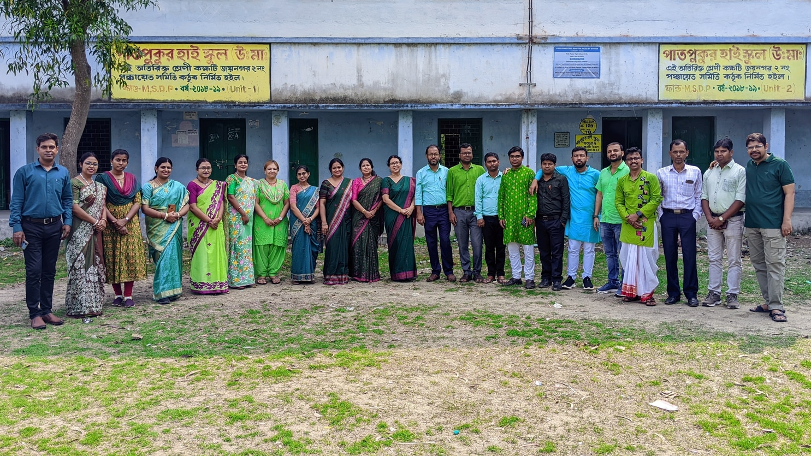
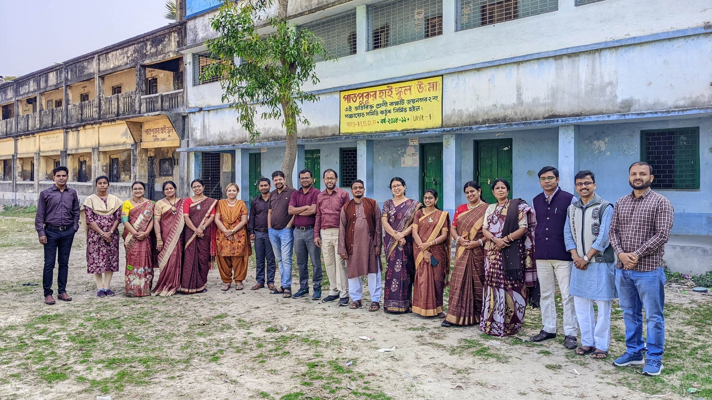
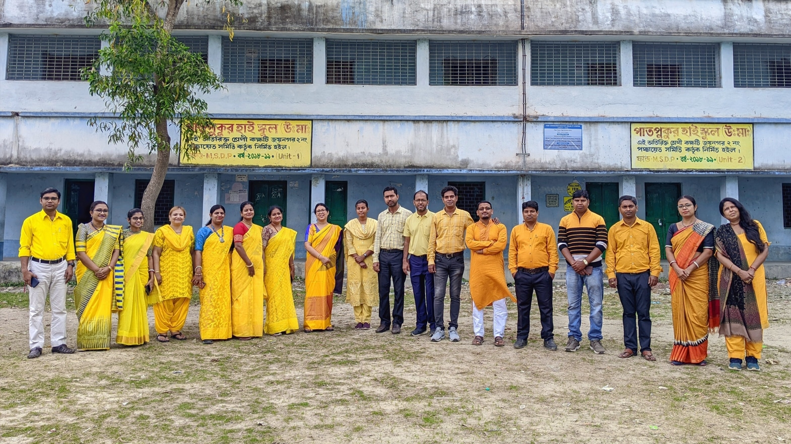
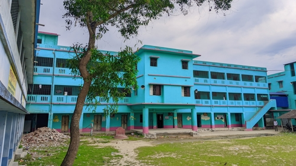
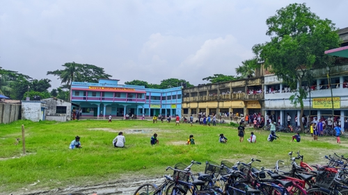
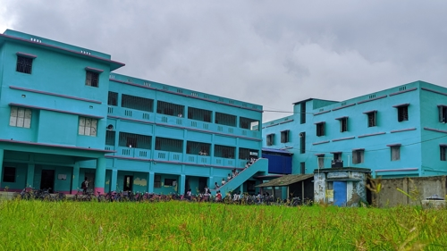
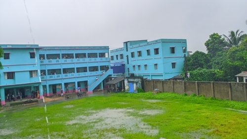
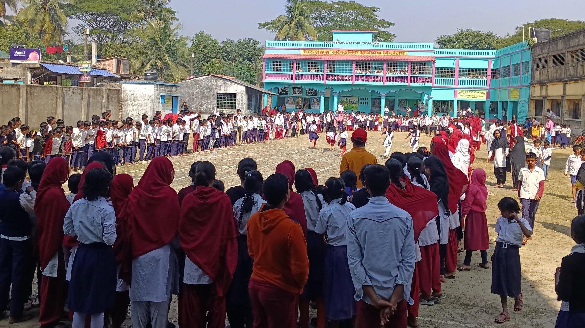

Notices
For Students
Forms
About Us
Pathpukur High School (H.S.), located in South 24 Parganas district of West Bengal, was established in 1954. It is a co-educational institution, approved and fully sponsored by the Government of West Bengal.
Since its inception, the school has played a vital role in shaping the lives of students in the area. Our goal is not just to provide textbook-based education; we place special emphasis on the overall mental, moral, and social development of each student.
We believe that through proper guidance, care, and inspiration, the hidden talents of every child can be awakened. We are committed to nurturing our students to become confident, humane, and socially responsible citizens in the future.
Academics
Classes Taught:
- From Class V to Class XII.
Higher Secondary (Classes XI & XII) - Arts Stream:
In our school, only the **Arts stream** is taught at the Higher Secondary level. The subjects are:
Bengali, English, History, Geography, Education, Philosophy, Political Science, Arabic, Sanskrit.
Uniform
Classes V to X:
- Boys: White shirt, maroon pants.
- Girls: White sari with maroon border and maroon blouse OR white dress/churidar and maroon skirt/pajama and dupatta.
Higher Secondary Section (Classes XI & XII):
- Boys: White shirt, black pants.
- Girls: White sari with black border OR white churidar, black pajama and dupatta.
Socks and shoes are mandatory with all uniforms. Appropriate winter wear should be worn during winter.
Some Great Quotes
"শিক্ষা হল মানুষের ভেতরের ঐশ্বর্য্যের প্রকাশ।"
"একজন ভাল শিক্ষক মোমবাতির মত - নিজে জ্বলে অন্যদের পথ দেখায়।"
"জ্ঞান যেখানে সীমাবদ্ধ, বুদ্ধি সেখানে আড়ষ্ট, মুক্তি সেখানে অসম্ভব।"
"শিক্ষার উদ্দেশ্য শুধু তথ্য পরিবেশন নয়, আত্মাকে জাগিয়ে তোলা।"
"মানুষের মন হলো একটি বাগান, যেখানে বীজ রূপে চিন্তাগুলি রোপণ করা হয়। তুমি যা রোপণ করবে, তাই ফসল পাবে।"
"প্রত্যেক শিশুকে শেখাও। প্রতিটি শিশুকে শেখাও। তারপর তাদের শেখাও কিভাবে নিজেদের শেখাতে হয়।"
Gallery








Contact Us
Address: Vill: Pathpukur, P.O.: Bokultala Hat, P.S.: Bokultala, Block: Joynagar II, Circle: Joynagar, Dist.: South 24 Parganas, State: West Bengal, Pin Code: 743338
Landline: +91 3218248083
Call us to connect!
Important Websites & Links
Student Self Declaration Portal New Banglar Shiksha Portal Banglar Shiksha SMS Portal West Bengal Board of Secondary Education (WBBSE) West Bengal Council of Higher Secondary Education (WBCHSE) Kanyashree Scholarship Portal Aikyashree Swami Vivekananda Scholarship OASIS Sabooj Sathi Vidyasagar Science Olympiad